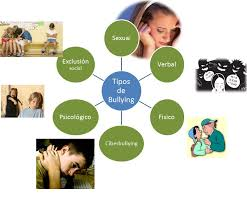

Tipos de Bullying
El bullying se puede presentar de diversas formas. A continuación se detallan los tipos más comunes:
- Bullying físico: Consiste en agresiones físicas, como golpes, empujones, patadas, o cualquier otro tipo de maltrato corporal. Este tipo de bullying es más evidente y puede dejar marcas físicas.
- Bullying verbal: Incluye insultos, burlas, apodos, amenazas o cualquier forma de agresión verbal que busca hacer sentir inferior a la víctima. A menudo este tipo de acoso no deja señales físicas, pero afecta profundamente la autoestima.
- Bullying psicológico o emocional: Se refiere al daño que se causa a nivel emocional. La manipulación, humillación, exclusión social, difamación o control emocional son algunas de las formas que adopta este tipo de acoso. Aunque no se ve a simple vista, sus efectos son devastadores a largo plazo.
- Bullying cibernético (ciberbullying): Es el uso de tecnologías digitales, como redes sociales, mensajes de texto o foros en línea para acosar a la víctima. El ciberbullying puede tener un alcance global y puede ser mucho más difícil de detectar, pero igualmente devastador.
Para más detalles, puedes consultar el informe de la UNICEF sobre bullying.
